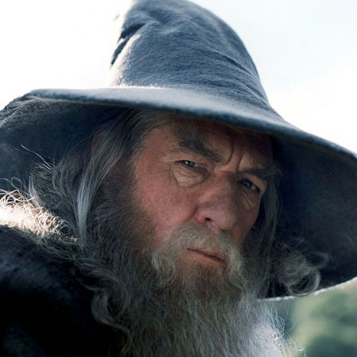
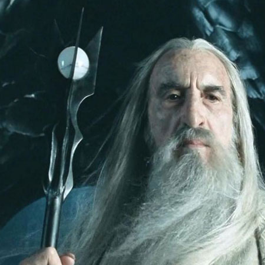

Gandalf
|  | Gandalf the Grey is one of the main protagonists of the Lord of the Rings. He is the head of the Fellowship until his fall in the Mines of Moria fighting the Balrog. Supposingly under the orders of Sarumane the White, his betrayal and fall will lead Gandalf to become the Head of the Magicians of Middle Earth. Even if it is not widely known, Gandalf was also a Ringbearer. He is played by Ian McKellen. |
Saroumane
|  | Sarumane the White is the head of the magicians sent to Middle Earth by the Valars to protect it from Sauron. But won over by power, he will fight along with Sauron and even create an army to destroy Rohan. His corruption will lead him to his death when, defeated by the Ents, he will be killed by one of his precious allies: Grima. Christopher Lee was chosen to play his character in the movie trilogy. |